虚拟局域网
@VLAN- 内容 Contents
- 传统以太网的局限性
- 广播风暴
- 虚拟局域网的特点
- IEEE 802.1Q
- 常用的配置命令
- 实操
广播风暴
单交换配置 VLAN
跨交换配置 VLAN
- 传统以太网的局限性
- 资源的竞争
- 通信的私密性
- 广播风暴 Broadcast Storm
- 通信过程中，会产生大量广播帧
- 广播域 - 广播可以抵达的地方；这个区域越小越好
- Broadcast Storm is a network condition in which so many broadcasts are occurring (for example, for apress verification purposes) that normal communication is disrupted.
- continually sending out broadcast messages
- the wire is continually busy
- no other station is able to transmit information


虚拟局域网 Virtual LAN
- 虚拟局域网 VLAN - Virtual LAN
- 不是一种新的局域网，而是一个服务/应用
- 通过配置，将一个物理的局域网在逻辑上划分为若干个虚拟的 LAN
- VLAN 内的主机间可以直接通信，而 VLAN 间不能直接互通
- 每个 VLAN 帧都一个明确的标识 VLAN tag，表明帧属于哪个 VLAN
- 特点 Feature
- 限制/隔离广播域:
广播域被限制在一个 VLAN 内，节省带宽，提高网络的处理能力
- 增强局域网的安全性：
不同 VLAN 内的报文在传输时是相互隔离的不同的 VLAN 用户不能和其它 VLAN 用户直接通信
- 提高网络的健壮性：
故障被限制在一个 VLAN 内，本 VLAN 内的故障不会影响其他 VLAN 的正常工作
- 灵活构建虚拟工作组：
划分不同的用户到不同的工作组，网络构建和维护更方便灵活、更容易
- 使用 Usage
- 一个交换机可以划分多个 VLAN
- 每个 VLAN 不受网络物理位置的限制
- 通常利用交换机的端口划分 VLAN
- 一个 VLAN 可以包含多个端口
- 一个端口只能属于一个 VLAN；所以一般称 port VLAN
- VLAN 由 id 和 name 来标识
- 根据 IEEE 802.1Q 标准，VLAN ID 是 12 位，因此理论上最多支持 2^12 = 4096 个 VLAN - 4K
- 其中 VLAN 0 和 VLAN 4095 被保留；VLAN 1 为默认 VLAN，所以实际可用的 VLAN ID 范围是 1-4094
- 默认情况下，所有端口都属于 VLAN 1
- 角色 Role
- 业务 VLAN
- 互联 VLAN
- 管理 VLAN
- 端口模式 Mode
- access：
默认模式
一般用于链接用户计算机
access 端口只能属于一个 VLAN
- trunk：
用于交换机之间或交换机和路由器之间的链接
trunk 端口可以属于多个 VLAN
- hybrid：
混合模式
华为专有模式
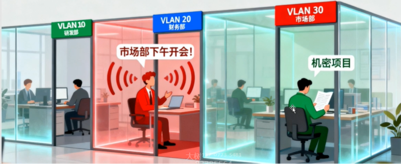
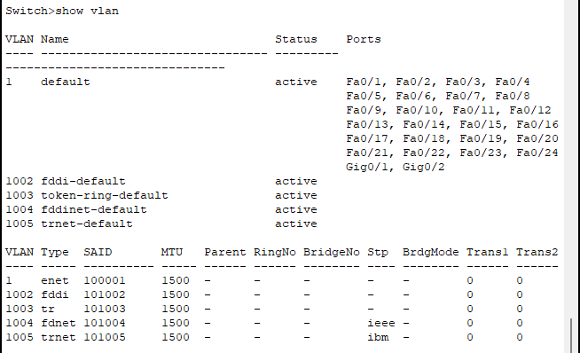
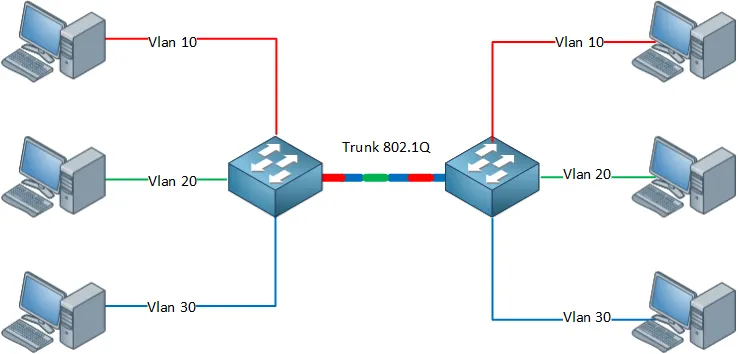
二层交换机无法实现不同 VLAN 之间的通信
跨 VLAN 通信，需要三层设备
IEEE 802.1Q
- 简称 Dot One Q，加入 4 Bytes 的 VLAN 标记，对以太网帧格式扩展，即：比普通以太网帧多 4 Bytes
- 携带 VLAN 标记的帧长：
- 1518 Bytes + 4 Bytes = 1522 Bytes
- VLAN 标记
- 标签协议标识 TPID(Tag Protocol Identifier)
2 Bytes
固定为 0x8100
- 标签控制信息 TCI(Tag Control Information)，包括
CFI：格式；1 bit
Priority：VLAN 优先级；3 bits
VLAN ID：VLAN 号；12 bits
- IEEE 802.1Q 帧只在交换机内部识别并处理，用户主机并不能识别
- 处理过程
- 接收：交换机每收到一个以太网帧，就打上 VLAN 标签：插入 4 Bytes 的 VLAN 标记，变成 IEEE 802.1Q 帧
- 转发：根据 VLAN 号转发到相应的端口，去掉标签后转发出去
- 单个交换机无法直接查看到 802.1Q 的封帧情况
- VLAN 帧的 TCI 字段的值 0x14 表示什么
| Preamble | SFD | Destination MAC | Source MAC | Type | Data | FCS |
| 7 | 1 | 6 | 6 | 2 | 46-1500 | 4 |
| Preamble | SFD | Destination MAC | Source MAC | VLAN | Type | Data | FCS |
| 7 | 1 | 6 | 6 | 4 | 2 | 46-1500 | 4 |
| TPID | TCI | ||
| 2byte | 1bit | 3bit | 12bit |
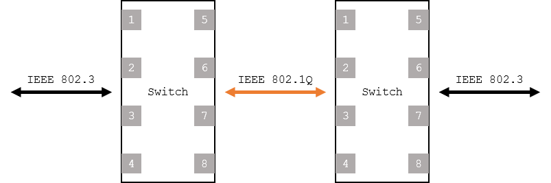

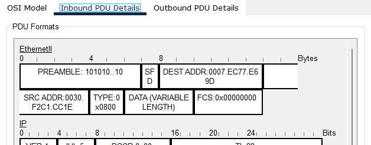
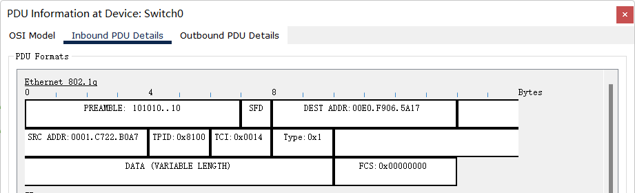
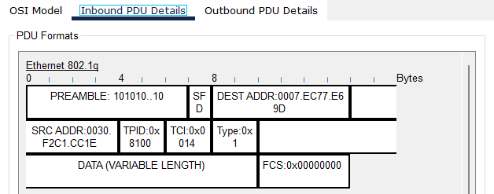
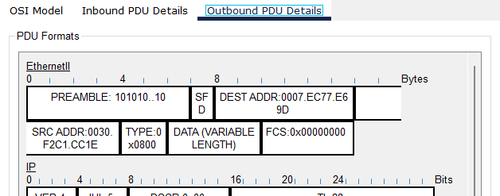
实操 Drill
- 相关命令
- 更改端口模式
- VLAN 放行
- 查看所有 trunk 端口
- 查看指定 trunk 端口
- 广播风暴
- 搭建拓扑并分配IP地址
- 各主机互相通信情况（发送简单PDU或者ping）
- 发送广播报情况
- 单个交换机的 VLAN 的划分 点击下载PT文件
- 创建拓扑并分配IP
- 配置 VLAN
创建 vlan10
添加相应的端口 fa0/1 - 可以简写为f0/1
指定访问模式
- 查看 VLAN 配置结果 - 多了一个 VLAN 10
- 配置其它 VLAN 并查看
- 测试通信情况：VLAN 内部、VLAN 之间
- 验证1：不同 VLAN 的用户不能通信
192.168.1.1 → 192.168.1.3：失败
C:\>ping 192.168.1.3 Pinging 192.168.1.3 with 32 bytes of data: Request timed out. Request timed out. Request timed out. Request timed out. Ping statistics for 192.168.1.3: Packets: Sent = 4, Received = 0, Lost = 4 (100% loss), C:\>192.168.1.1 → 192.168.1.5：失败
C:\>ping 192.168.1.5 Pinging 192.168.1.5 with 32 bytes of data: Request timed out. Request timed out. Request timed out. Request timed out. Ping statistics for 192.168.1.5: Packets: Sent = 4, Received = 0, Lost = 4 (100% loss), C:\> - 验证2：VLAN 可以隔离广播域
模拟通信模式下，某个PC发送广播，查看各PC的通信情况
- 跨交换机的 VLAN 的划分 点击下载PT文件
- 搭建拓扑
- 配置各主机IP
- 创建vlan10，20，30
- 划分端口到相应的 VLAN
- 设置交换机互联端口为 trunk 模式
- 查看对应端口模式
- 测试各 VLAN 的通信情况
- 查看交换机 VLAN 的配置情况
- 查看交换机 trunk 端口的详细信息
- 交换机某一侧已经设置为 trunk 模式的前提下，对端交换机可以不设置 trunk - 系统会自动调整
- 且会让所有的 VLAN 都通过
- 建议双方交换机都显式的设置为 trunk 并指定允许通过的 VLAN
- 可以指定端口的模式
Switch(config-if)#switchport mode trunk
Switch(config-if)#switchport trunk allowed vlan 20
Switch(config-if)#switchport trunk allowed vlan 20, 30
Switch(config-if)#switchport trunk allowed vlan 20-30
Switch#show interfaces trunk
Switch#show interfaces fa0/4 switchport
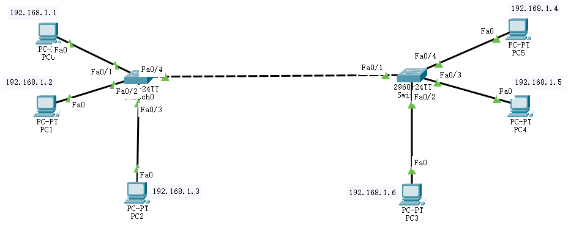
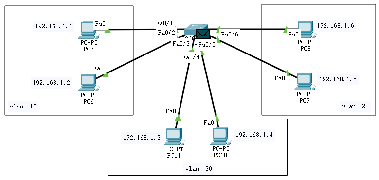
Switch>en Switch#conf ter Switch(config)#vlan 10 Switch(config-vlan)#inter f0/1 Switch(config-if)#switchport access vlan 10 Switch(config-if)#inter f0/2 Switch(config-if)#switchport access vlan 10 Switch(config-if)#end
Switch#show vlan
VLAN Name Status Ports
---- -------------------------------- --------- -------------------------------
1 default active Fa0/3, Fa0/4, Fa0/5, Fa0/6
Fa0/7, Fa0/8, Fa0/9, Fa0/10
Fa0/11, Fa0/12, Fa0/13, Fa0/14
Fa0/15, Fa0/16, Fa0/17, Fa0/18
Fa0/19, Fa0/20, Fa0/21, Fa0/22
Fa0/23, Fa0/24, Gig0/1, Gig0/2
10 VLAN0010 active Fa0/1, Fa0/2
1002 fddi-default active
1003 token-ring-default active
1004 fddinet-default active
1005 trnet-default active
VLAN Type SAID MTU Parent RingNo BridgeNo Stp BrdgMode Trans1 Trans2
---- ----- ---------- ----- ------ ------ -------- ---- -------- ------ ------
1 enet 100001 1500 - - - - - 0 0
10 enet 100010 1500 - - - - - 0 0
1002 fddi 101002 1500 - - - - - 0 0
1003 tr 101003 1500 - - - - - 0 0
1004 fdnet 101004 1500 - - - ieee - 0 0
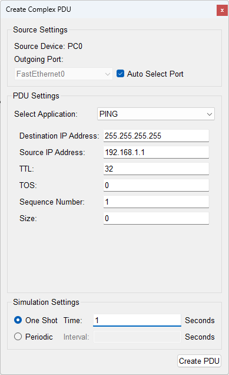
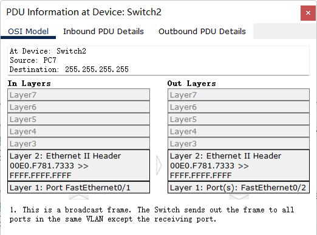
Switch#conf ter Enter configuration commands, one per line. End with CNTL/Z. Switch(config)#inter fa0/4 Switch(config-if)#switchport mode trunk Switch(config-if)#switchport trunk allowed vlan 20 Switch(config-if)#end
Switch#show interfaces trunk Port Mode Encapsulation Status Native vlan Fa0/4 on 802.1q trunking 1 Port Vlans allowed on trunk Fa0/4 20 Port Vlans allowed and active in management domain Fa0/4 20 Port Vlans in spanning tree forwarding state and not pruned Fa0/4 20 Switch#
Switch#show interfaces tru Switch#show interfaces trunk Port Mode Encapsulation Status Native vlan Fa0/4 auto n-802.1q trunking 1 Port Vlans allowed on trunk Fa0/4 1-1005 Port Vlans allowed and active in management domain Fa0/4 1,20,30 Port Vlans in spanning tree forwarding state and not pruned Fa0/4 1,20,30
Switch#show interfaces tru Switch#show interfaces trunk Port Mode Encapsulation Status Native vlan Fa0/4 on 802.1q trunking 1 Port Vlans allowed on trunk Fa0/4 20 Port Vlans allowed and active in management domain Fa0/4 20 Port Vlans in spanning tree forwarding state and not pruned Fa0/4 20
Switch#show interfaces fa0/4 switchport Name: Fa0/4 Switchport: Enabled Administrative Mode: trunk Operational Mode: trunk Administrative Trunking Encapsulation: dot1q Operational Trunking Encapsulation: dot1q Negotiation of Trunking: On Access Mode VLAN: 1 (default) Trunking Native Mode VLAN: 1 (default) Voice VLAN: none Administrative private-vlan host-association: none Administrative private-vlan mapping: none Administrative private-vlan trunk native VLAN: none Administrative private-vlan trunk encapsulation: dot1q Administrative private-vlan trunk normal VLANs: none Administrative private-vlan trunk private VLANs: none Operational private-vlan: none Trunking VLANs Enabled: 20 Pruning VLANs Enabled: 2-1001 Capture Mode Disabled Capture VLANs Allowed: ALL Protected: false Unknown unicast blocked: disabled Unknown multicast blocked: disabled Appliance trust: none
Summary & Homework
- Summary
- VLAN 的特点
- VLAN 的配置
单交换机
跨交换机
- Homework
- VLAN 是为了分割冲突域而设计的一种新的网络（）。
- 可以跨交换机划分 VLAN（）。
- 翻译
Virtual LAN, or VLAN, is a networking technology that allows networks to be segmented logically without having to be physically rewired.
Each station can be assigned a VLAN identification number (ID), and stations with the same VLAN ID (no matter what physical switch they are connected to) can act and function as though they are all on the same physical network segment. Broadcasts sent by one host are received only by hosts with the same VLAN ID.
- 完善学校组织结构图的 VLAN 划分
自己指定 VLAN 号和对应的端口
测试不同 VLAN 之间的通信
测试广播域的通信
- 归纳总结交换机 VLAN 划分使用到的命令
- Reading